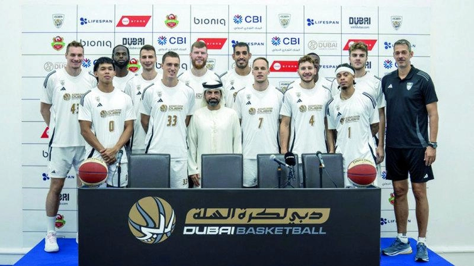

نادي دبي لكرة السلة يتابع بدايته المثالية في الدوري الأدرياتيكي
في مباراة مليئة بالحماس والتشويق، تمكن اللاعب إيزايا تايلور من تسجيل كرة الفوز في اللحظة الأخيرة لصالح فريق دبي لكرة السلة، الذي حقق بذلك فوزاً ملحمياً بنتيجة 80-79 أمام خصمه سبارتاك سوبوتيكا، ليرفع سجل نتائجه في دوري رابطة كرة السلة لدول البحر الأدرياتيكي ABA إلى 4-1. ورغم أن تايلور هو الذي سجل سلة الفوز لصالح الفريق، فإن الجمهور الحاضر للتشجيع كان له الدور الحاسم في تحقيق نتيجة المباراة. ومع تبقي 55 ثانية فقط على نهاية المباراة، توجه متصدر نقاط دوري ABA المرشح لأفضل لاعب، راسير بولتون من فريق سبارتاك، إلى خط الرمية الحرة، لكنه لم يسجل سوى كرة واحدة من رميتين، حيث ارتفع هدير الجماهير الصاخبة. بعد ذلك كان الدور على إيزايا تايلور، الذي سجل سلة الفوز مع تبقي ثانيتين فقط على نهاية المباراة، ليضمن بذلك الانتصار بفارق نقطة واحدة على سبارتاك. ويجسد فوز فريق دبي لكرة السلة العقلية الجماعية التي يتميز بها، مع مساهمة جميع اللاعبين في الهجوم والدفاع. وقد برز المخضرم في الدوري الأمريكي للمحترفين ديفيس بيرتانز بمهاراته الرائعة، حيث سجل خمس محاولات من أصل ست من خارج خط النقاط الثلاث، ليحقق أداء مميزاً في المباراة مع تسجيل 17 نقطة. وكان قائد الفريق كليمن بريبيليتش، والمفضل لدى الجماهير أودو عباس في أفضل أداء لهما في الدفاع، حيث حقق كل منهما سبع كرات مرتدة. وأشاد يوريكا جوليماتش، مدرب فريق دبي لكرة السلة، بشخصية لاعبيه، وشكر الجماهير في دبي على دعمها للفريق والمساهمة في تحقيق الفوز قائلاً: أعتقد أننا بحاجة إلى أن نكون أفضل بكثير مما نحن عليه اليوم. لدينا الوقت. نحن فريق جديد. تعرضنا للعديد من الإصابات، ولم يتدرب بعض اللاعبين خلال الأسبوع.
اقرأ المزيد
أضف تعليقك